C11.Residual Network & batch norm
动机 Residual block可以让深层网络正常训练
1.Squential process
深层网络的计算过程可以看作是一连串的如下过程:
其中, 函数$f[\bold x,\boldsymbol \phi]$是仿射变换+激活函数
也可以用下图表示:
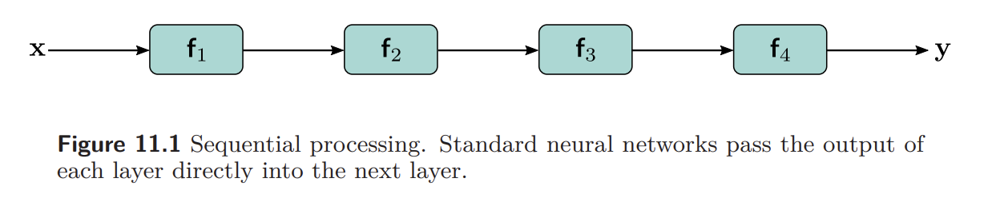
Problem 虽然理论上似乎可以直接训练任意深度的网络, 但在实际训练深层网络的过程中遇到了——无论是训练误差还是测试误差都随着层数增加而增加, 这与理论上层数更多的网络有更大容量相违背——这样的问题现象, 我们把问题归咎于训练方法上
Explanation(shattered gradient) 对于一个$\R \rightarrow \R$的浅层和深层网络, 直接计算输入$x$与输出$y$的梯度, 得到如下比较图:
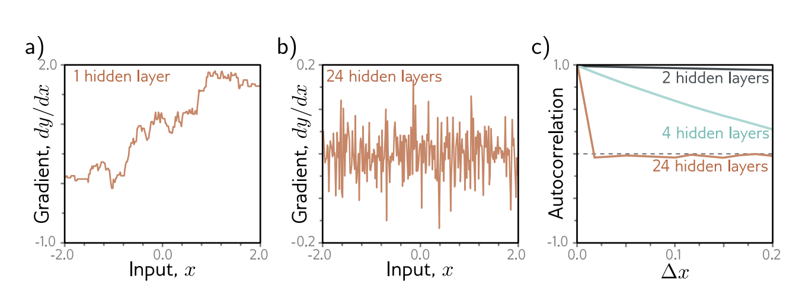
可见对于一个有24层隐藏层的网络, 他的梯度变得极其不规律, 即如果画出$x-y$的图像, 会出现很多小山峰和小山谷. 图c说明了相邻梯度值的相关性, 24层网络的相关性随距离的增加急剧下降. 这种不规律性会导致梯度下降很容易往一个错误的方向前进一大步.
虽然训练过程是对权值$\omega$求导, 但上述深层网络的梯度与深层网络的前几层权值的梯度是一样的.
向后传播过程中累次乘法是造成坏性质的直接原因:
上式中对$\bold f_1$求导可以看作是对$f_1(x,\phi)$的参数求导吧
2.Residual connection and blocks
2.1.basic idea
Residual connections 就是在神经网络每轮映射的结果加上原自变量值:
可以使用下图a, 或者展开后的下图b表示:
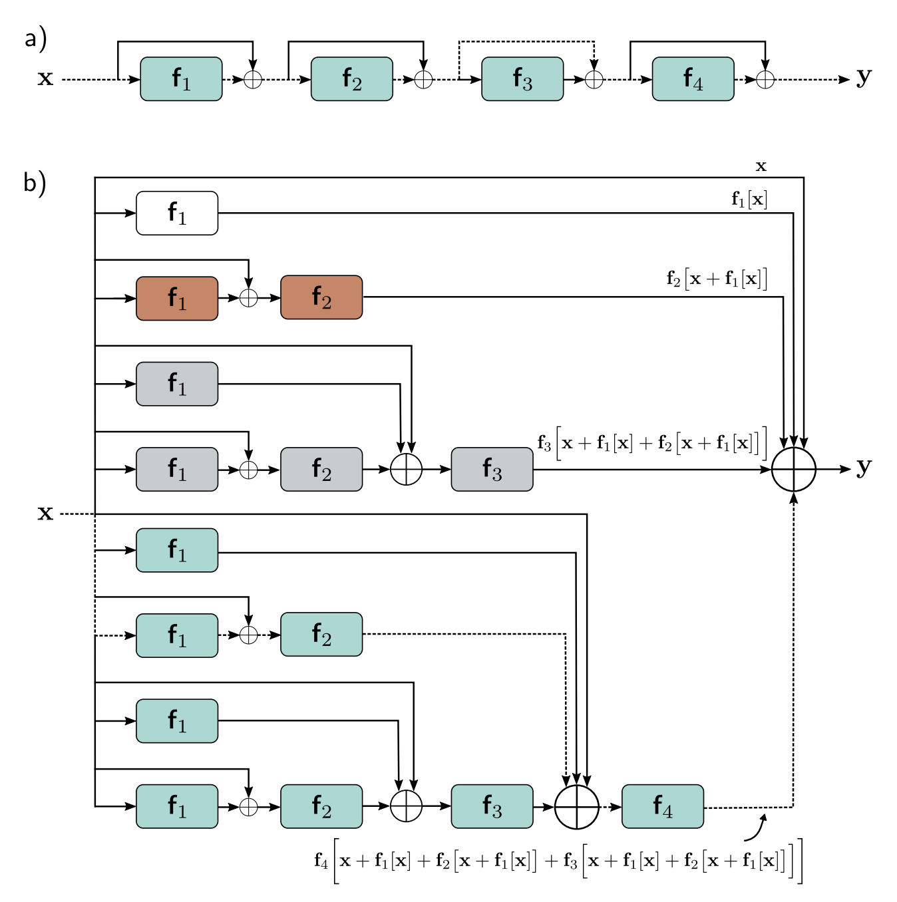
Explanation 从图b的视角, 这样的网络让$\bold y$对$\bold f_1$求导会有很多路径:
如此一来, 需要求导的权值离输出越远, 该层权值对导数的影响越大(大概指数级), 使得导数图像更稳定, 消除shattered gradient.
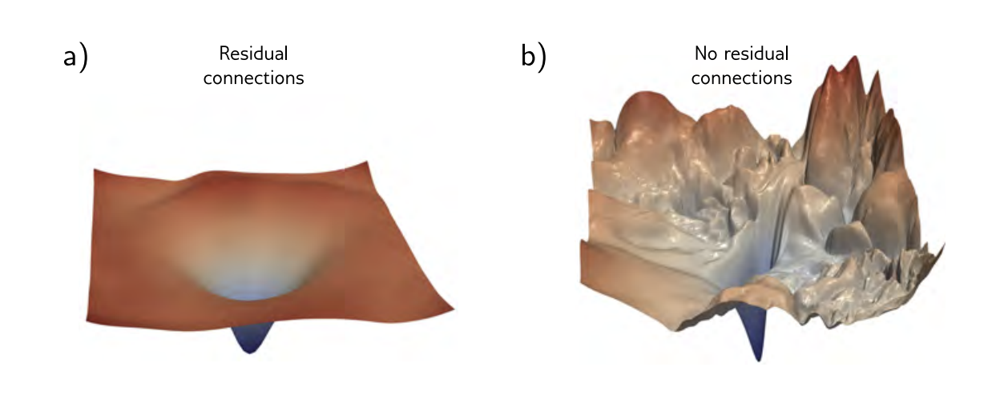
2.2.block的位置
如果上述的函数$\bold f_i(x)=ReLU(Affine(x))$, 加上Residual可能会使ReLU后必为正数的规则被打破????, 所以包裹在residual block内的函数末尾一般是Affine/Linear, 如下图b和图c:
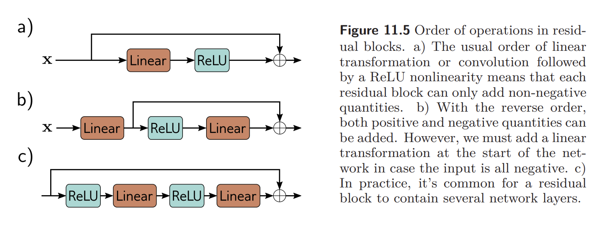
上图b开头的Linear是由于在网络的起始端, 若直接使用ReLU对输入会产生影响
2.3.初始值问题
使用了residual后, 使用He初始值不足以抑制计算范围超出限度. 一般可以通过使用He初始值并将所有residual block的输出值乘以$1/\sqrt{2}$用于抑制增长(并没有使用新的初始值方法).
更通常的方法是使用下一节的Batch Normalization.
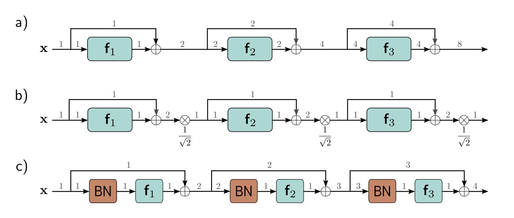
3.Batch Normalization
3.1.basic idea
batch norm将每个batch同一维度的数据进行标准化处理, 再做一次统一的scaling和平移:
其中, scaling+平移的参数$\gamma,\delta$需要通过学习得到
在网络中, 当该层有$D$个神经元, 则$\gamma,\delta$就有$D$个.在CNN中, 当该层有$D$个channel, 则 则$\gamma,\delta$就有$D$个.
在训练中, 如果没有batch, 可以维护一个全局的$\mu, s$, 并在测试中冻结.
3.2.优缺点分析
batch norm虽然增加了计算量, 但有如下优点: 更稳定的前向和后向传播, 引入了一定的噪音相当于进行了regularization, 实验表明可以使用更大的learning rate.
4.Common Residual archetecture
Residual connection 不是DL的标准部分, 有许多方式使用.
4.1.ResNet
used in image calssification CNN, known as Residual Netweok:
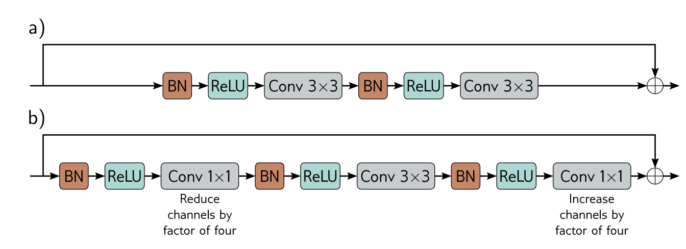
上图a是标准Residual block, 图b被称为*Bottleneck residual block*, 位于块内开头和结尾的1x1conv分别用于降低和增加channel数, 使得位于中间的3x3conv的channel数更少计算更快, 并使得输入和输出的channel数保持一致residual得以直接叠加.
4.2.DenseNet
dense net改变了residual输入与输出直接相加的方式, 而是直接将输入插入到频道中(concatenate to output):
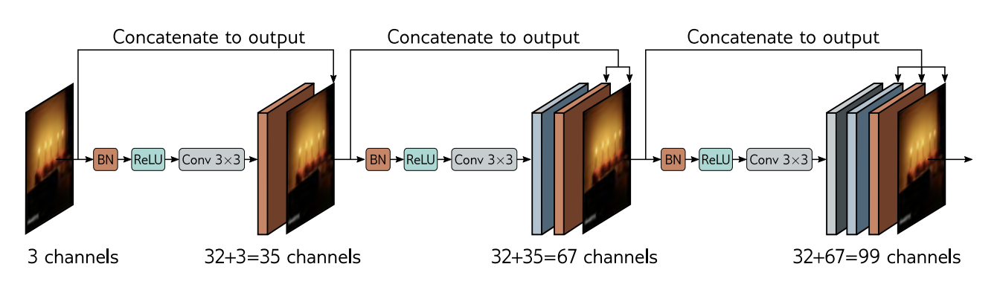
由上图可知, 这种直接插入频道的方式, 使得最后一层的数据都仍然保留着输入图像的RGB频道
但是, 这种方式造就的网络不会太深, 受限于频道数量随深度增加而指数级增长
4.3.UNet
关于上一章介绍的hourglass形状的CNN, 这样的CNN有一个缺点: 中间的low-redolution部分(size小channel多的部分)必须“记住”一定的信息, 才能在后续upsampling精确还原出图像的大致样貌.
UNet使用类似DenseNet的方法, 在hourglass对等的两侧, 将downsampling一侧的数据插入到upsampling一侧, 形成了“U”型结构:
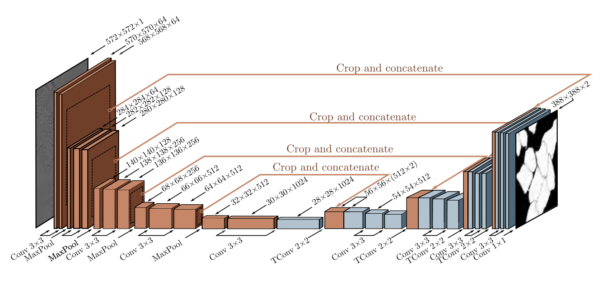
需要注意的是, 由于未知原因, 这里的UNet使用了没有padding的3x3conv, 导致即使没有pooling每次conv都会使数据大小减少2, 这进一步导致在upsampling的时候数据大小与downsampling不对等, 需要进行crop(裁剪, 仔细看上图中橙色方块的虚线部分)才能进行residual.
5.Residual的优缺点总结
Residual可以让多达1000层的网络得以有效的训练, 但有一些不好的地方:
1.一个浅层, 频道更多(或网络更宽)的residual网络似乎比深层residual网络更好, 这很奇怪, 也偏离了使用residual的初衷
2.residual让前面的gradient不好向后传播.
6.Normalization的其他方法
下图给出了各种normalization的方法
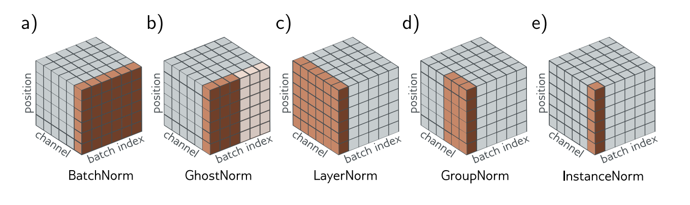
注意, 上图中x,z轴已经可以表示一个CNN的数据块, 而y轴表示的是batch内的不同数据块, 可见对于CNN的batch norm直接对不同数据的相同频道内的所有位置统一进行normalization
§Problem
Problem11.4
Explain why the values in the two branches of the residual blocks in figure 11.6a are uncorrelated. Show that the variance of the sum of uncorrelated variables is the sum of their individual variances.
Solution proof uncorrelated: 由图可知, $f(x)=x$
proof variance of the sum of uncorrelated variables is the sum of their individual variances:
$\textcolor{red}{\bold{Answer}}$ 关于不相关的证明:
一般情况下, $f(x)=\omega x$, 而$\omega$通常是均值为0的正态分布, 所以有$E(\omega)=0$, 所以:
Problem11.5
The forward pass for batch normalization given a batch of scalar values $\{z_i\}^I_i=1$ consists of the following operations (figure 11.15):
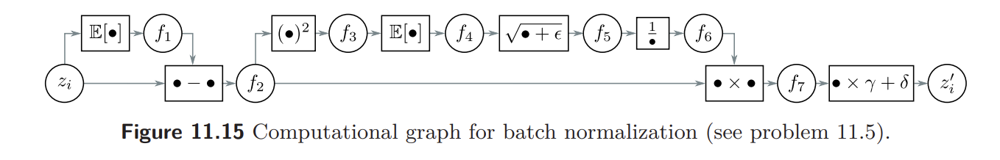
where $E[z_i] = \frac1I \sum_i z_i$. Write Python code to implement the forward pass. Now derive the algorithm for the backward pass. Work backward through the computational graph computing the derivatives to generate a set of operations that computes $∂z'_i/∂z_i$ for every element in the batch. Write Python code to implement the backward pass.
Solution forward process as follow:
import numpy as np
epsilon = 1e-4
z = np.array([1,2,3,4,5]) # input
u = np.sum(z)/z.size
f2 = z-u
f6 = 1/np.sqrt(np.sum(f2**2)/f2.size + epsilon)
f7 = f2*f6
z_ret = f7*gamma+delta # output 向后传播的公式:
我喜欢直接看着总公式求, 而不是看着标量向量混成一团的计算图:
python code:
def backward(self, dout):
return dout*self.gamma*(1-1/self.I)/(self.s+self.epsilon) $\textcolor{red}{\bold{Answer}}$ 答案在这里https://kratzert.github.io/2016/02/12/understanding-the-gradient-flow-through-the-batch-normalization-layer.html
probelm 11,7
Consider applying an L2 regularization penalty to the weights in the convolutional layers in figure 11.7a, but not to the scaling parameters of the subsequent BatchNorm layers. What do you expect will happen as training proceeds?
Solution 训练结果的权值会变小, 但BN层的权值可能会比较大, 导致regularization的效果降低.